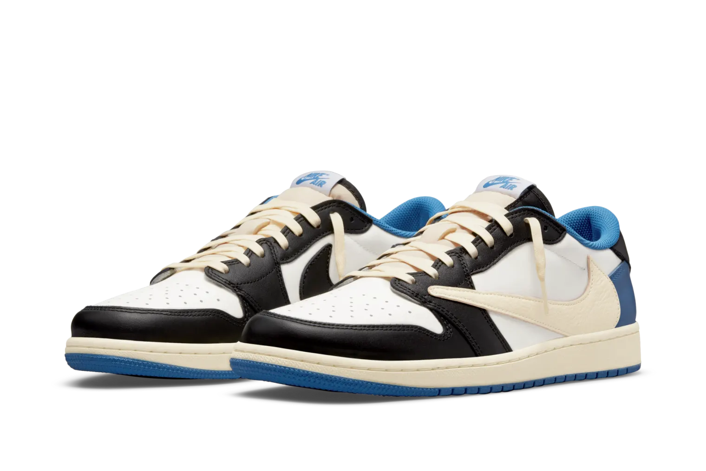

JORDAN 1 RETRO LOW OG SP
Fragment x Travis Scott
The Air Jordan 1 Low Fragment Design x Travis Scott nods to the original 2016 Air Jordan 1 Fragment with its simple color blocking. It features a smooth white leather upper with black and royal blue leather overlays. From there, a signature reversed Swoosh and vellowed soles add a Cactus Jack flair to the classic silhouette .
